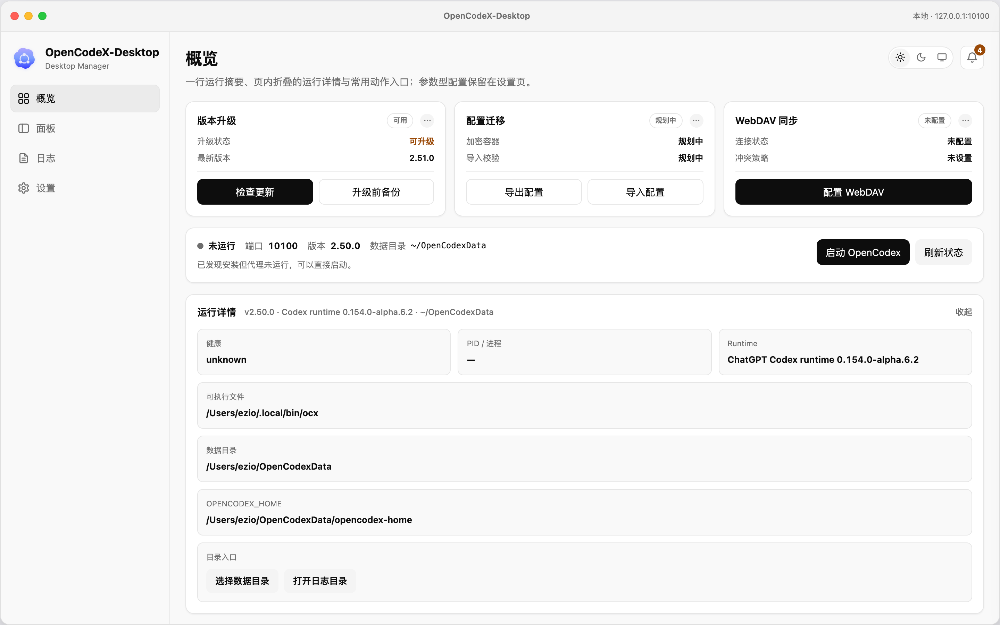
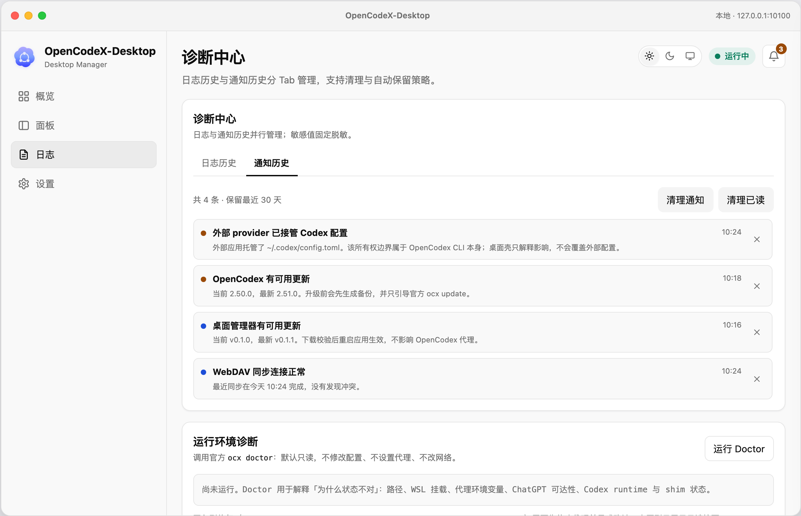
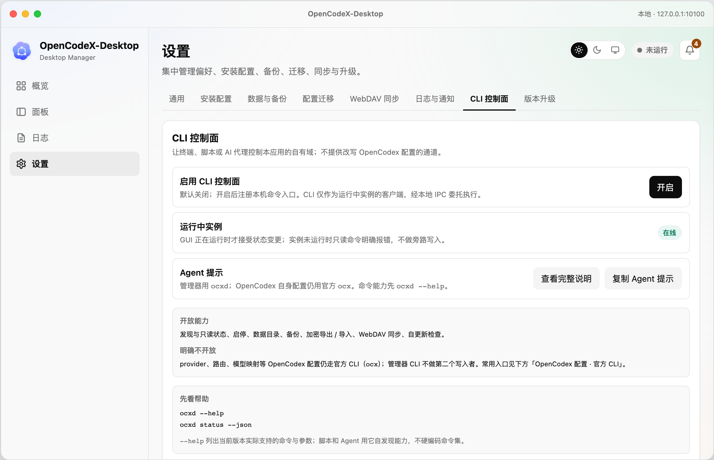
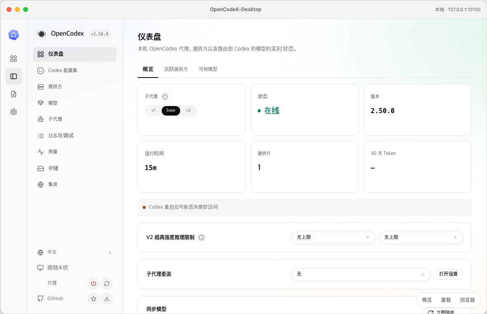

首页 / 05 原型与设计
原型与设计
原型的作用是定界面结构和状态分支，不是定实现。用的全是 mock 数据：不调用真实 ocx，不读真实配置，也不会真的启停或备份。
怎么打开：入口是 05-原型设计/原型/index.html，用 hash 路由串起各页面。「面板」那一屏依赖官方页面快照，而官方素材不随仓库分发，克隆后需本地自备，缺快照时该路由不可用。
Page map
页面地图
原型按 1180 × 760 的 macOS 应用窗口表达，最小 900 × 600。
| 路由 | 页面 | 承载内容 |
|---|---|---|
| #overview | 概览 | 运行状态卡、运行详情折叠、快捷动作卡（版本升级 / 配置迁移 / WebDAV 同步）、最近事件 |
| #panel | 面板 | 官方 GUI 源码级快照，方案 B：保留标题栏与 64px 图标栏 |
| #extensions | 拓展 | Skills 管理、MCP 服务器管理 |
| #logs | 日志 / 诊断中心 | 日志查看、运行环境诊断（ocx doctor 只读摘要）、通知历史 |
| #settings | 设置 | 通用、安装配置、数据与备份、扩展管理、配置迁移、WebDAV 同步、日志与通知、CLI 控制面、版本升级、关于 |
| #tray | 托盘 | macOS / Windows 托盘状态菜单原型 |
设置分区的锚点是 general / installation / backup / extensions / migration / sync / cleanup / cli / upgrade / about。
Screens
界面截图








Rules
几条必须守住的界面口径
- 动作按状态渲染，不渲染没有解释的灰色禁用按钮。用状态说明文字说清为什么现在不能点。比如
starting_failed下，启动按钮的文案变成「重试启动」。 - 界面里不出现 P0 / P1 / P2。设置分区、卡片标签、面板标题都只用功能名和「规划中 / 可用」，阶段编号只留在文档里。
- 两个版本对象分开。概览「版本升级」卡和设置第一块是 OpenCodex 本体（官方
ocx update引导）；设置第二块是桌面管理器自身（应用自更新）。按钮和文案必须让用户分清当前更新的是哪一个。 - 主题只有一份取值。
ocx-theme（light / dark / system）由外壳和内嵌官方面板共同派生，面板不保存自己的主题，切换时用postMessage实时同步。 - WebDAV 卡按连接状态渲染。未配置时不置灰，只把动作区换成一颗「配置 WebDAV」直达设置；其余状态各自的动作组合不同。
- 概览定稿为 B+ 合并版：一行运行摘要 + 页内折叠的「运行详情」+ 压缩后的快捷动作卡。
- 敏感值永远掩码，按钮用明确动词（启动、停止、重启、刷新状态、打开面板、查看日志），涉及 restore / 停止 / 重启 / 切换数据目录时必须解释后果。
视觉来源：颜色体系从官方 GUI 构建产物的设计 token 提取，再向官方面板对齐，避免嵌入面板后割裂。截图只作为视觉 QA 证据，不用来反推样式。
OpenCodeX-Desktop 项目报告 · 05 原型与设计 · 来源：协作包 05-原型设计/。派生产物，不作为事实源。